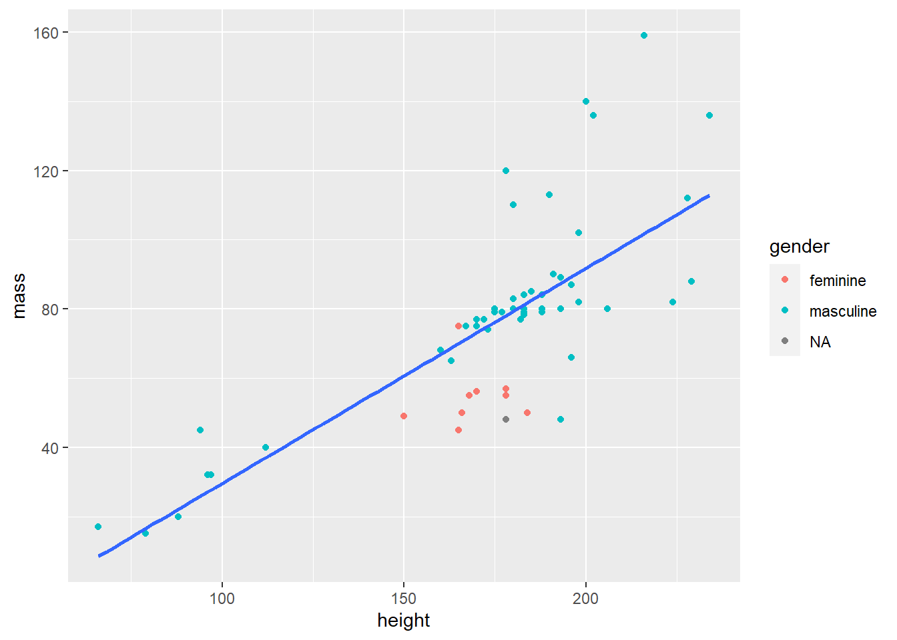
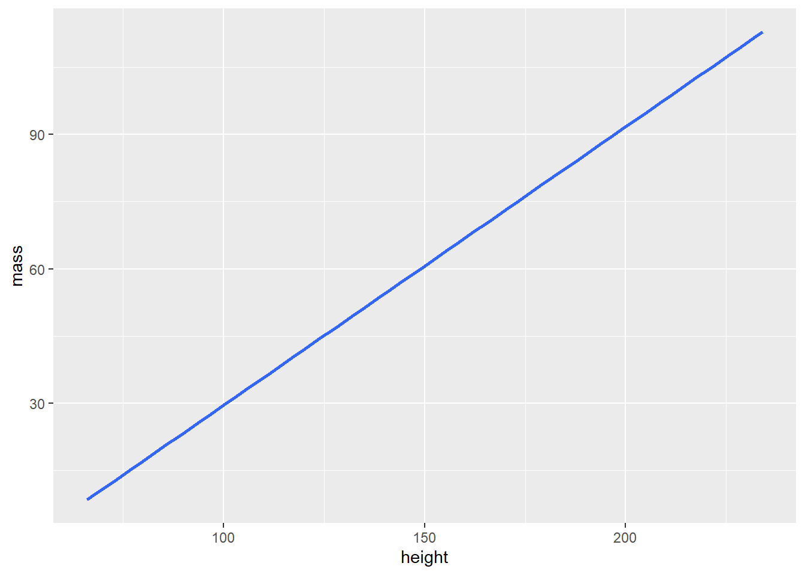

library(tidyverse)
library(broom)
library(gt)my test workflow
Executive Summary
Starwars1 datasets can be analyzed, modeled, and visualized. Using Tidyverse Wickham et al. (2019) principles I will create a reproducible project that uses code to orchestrate my research workflow. Research artifacts (slides, websites, documents) will be derived from code because a primary principle of reproducibility is to do everything with code. Quarto scientific publishing tools and techniques will be employed. Using tidyverse principles I will wangle my data from and into data frames.
Reproducibility
Use a Quarto Document to draft your methodology, modeling, and visualizations
The last thing you should do is create the publication artifacts: slides, dashboards, websites. In other words, first, draft workflows in a Quarto Document. Last format reports
Use git version control
Use github for profiling your git repositories and facilitating group collaboration.
Load library packages
Import and wrangle data
In my starwars dataset, I threw out Jabba the Hut.
my_starwars_df <- dplyr::starwars |>
filter(mass < 500) |> # Throw out Jabba
select(name, mass, height, gender)
my_starwars_df# A tibble: 58 × 4
name mass height gender
<chr> <dbl> <int> <chr>
1 Luke Skywalker 77 172 masculine
2 C-3PO 75 167 masculine
3 R2-D2 32 96 masculine
4 Darth Vader 136 202 masculine
5 Leia Organa 49 150 feminine
6 Owen Lars 120 178 masculine
7 Beru Whitesun lars 75 165 feminine
8 R5-D4 32 97 masculine
9 Biggs Darklighter 84 183 masculine
10 Obi-Wan Kenobi 77 182 masculine
# ℹ 48 more rowsDisplay my dataset as a pretty great table
Showing here only the first ten observations
my_starwars_df |>
slice_head(n = 10) |>
gt()| name | mass | height | gender |
|---|---|---|---|
| Luke Skywalker | 77 | 172 | masculine |
| C-3PO | 75 | 167 | masculine |
| R2-D2 | 32 | 96 | masculine |
| Darth Vader | 136 | 202 | masculine |
| Leia Organa | 49 | 150 | feminine |
| Owen Lars | 120 | 178 | masculine |
| Beru Whitesun lars | 75 | 165 | feminine |
| R5-D4 | 32 | 97 | masculine |
| Biggs Darklighter | 84 | 183 | masculine |
| Obi-Wan Kenobi | 77 | 182 | masculine |
Model
my_fit <- lm(mass ~ height, data = my_starwars_df)
# my_fit <- lm(mass ~ height, data = starwars |> filter(mass < 500))
my_fit
Call:
lm(formula = mass ~ height, data = my_starwars_df)
Coefficients:
(Intercept) height
-32.5408 0.6214 summary(my_fit)
Call:
lm(formula = mass ~ height, data = my_starwars_df)
Residuals:
Min 1Q Median 3Q Max
-39.382 -8.212 0.211 3.846 57.327
Coefficients:
Estimate Std. Error t value Pr(>|t|)
(Intercept) -32.54076 12.56053 -2.591 0.0122 *
height 0.62136 0.07073 8.785 4.02e-12 ***
---
Signif. codes: 0 '***' 0.001 '**' 0.01 '*' 0.05 '.' 0.1 ' ' 1
Residual standard error: 19.14 on 56 degrees of freedom
Multiple R-squared: 0.5795, Adjusted R-squared: 0.572
F-statistic: 77.18 on 1 and 56 DF, p-value: 4.018e-12broom - tidy
my_fit |>
tidy() |>
gt()| term | estimate | std.error | statistic | p.value |
|---|---|---|---|---|
| (Intercept) | -32.5407582 | 12.56052521 | -2.590716 | 1.218820e-02 |
| height | 0.6213599 | 0.07072758 | 8.785255 | 4.017933e-12 |
my_pvalue <- my_fit |>
tidy() |>
filter(term == "height") |>
pull(p.value)The p-value of my model is 4.0179329^{-12}
broom - glance
my_fit |>
glance() |>
gt()| r.squared | adj.r.squared | sigma | statistic | p.value | df | logLik | AIC | BIC | deviance | df.residual | nobs |
|---|---|---|---|---|---|---|---|---|---|---|---|
| 0.5795187 | 0.5720101 | 19.13727 | 77.18071 | 4.017933e-12 | 1 | -252.4758 | 510.9515 | 517.1329 | 20509.16 | 56 | 58 |
The adjusted r.squared is 0.5795187
Visualization
starwars %>%
filter(mass < 500) %>%
select(name, mass, height, gender) %>%
ggplot(aes(height, mass)) +
geom_point(aes(color = gender)) +
geom_smooth(method = lm, se = FALSE)
columns
starwars %>%
filter(mass < 500) %>%
select(name, mass, height, gender) %>%
ggplot(aes(height, mass)) +
geom_point(aes(color = gender)) +
geom_smooth(method = lm, se = FALSE)
starwars %>%
filter(mass < 500) %>%
# select(name, mass, height, gender) %>%
ggplot(aes(height, mass)) +
geom_smooth(method = lm, se = FALSE)
Reference
Wickham, Hadley, Mara Averick, Jennifer Bryan, Winston Chang, Lucy McGowan, Romain François, Garrett Grolemund, et al. 2019. “Welcome to the Tidyverse.” Journal of Open Source Software 4 (43): 1686. https://doi.org/10.21105/joss.01686.
Footnotes
The Starwars series was created by George Lucas. The data comes from the {dplyr} package, part of the Tidyverse↩︎